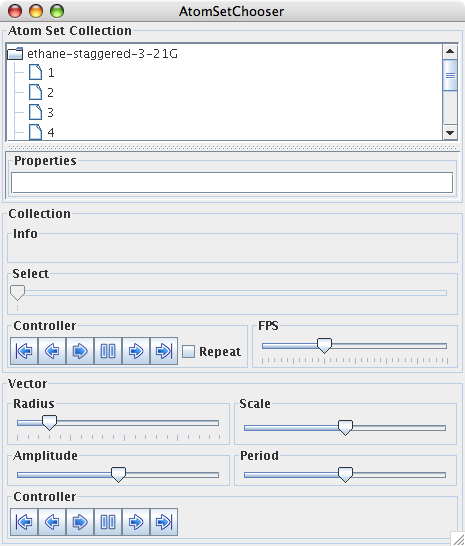

Navigating in a Multiframe File
The display at right is from the file ethane-staggered-3-21G.log.
To follow along you can use the applet at right or download
the
file and open
it in a copy of the Jmol application. If you are using the applet at right you can return to this view by clicking the button below.
There are four primary ways to navigate to particular frames (3 & 4 only work in the application):
- In the application and the applet use the pop-up menu (right mouse button, control-click on a one button mouse > Model > select the frame you wish to display). You can also use choices in the "Animate" option of this pop-up menu.
- Use the command line (see Using the Jmol Script Window for how to access). The command is "frame #.#"(or its synonym, "model #.#"), where the first number is the model number (essentially the file) and the frame is the molecular information set within the file. So for the example file "frame 1.9" will move you to frame 9 (the last frame of this file); "frame 1.7" will move you to the seventh frame; "frame 1.1" will move you to the first frame; "frame 1.0" means display all the frames superimposed on each other. Since only one file is loaded the first digit is always one in this example.
- Use the pull-down menus or buttons in the application (to
try this download
the data file and open it
in the Jmol application). The menu command is (Tools >
Animate... > Once) to play through to the last frame once. To move
one frame at a time use the buttons. Use , the rewind button, to get to the first
frame. Use
 , the
previous button, to go back one frame. Use , the next button, to go forward one
frame. Use
, the
previous button, to go back one frame. Use , the next button, to go forward one
frame. Use  , the last
frame button, to go to the end.
, the last
frame button, to go to the end. - Use the atom set chooser dialog in the application.
Be warned this dialog needs some updating. Open the
dialog using the pull-down menu (Tools > AtomSetChooser...).
You can navigate using the equivalent buttons to those in
choice 3, but the set at the bottom does not work. You can
also choose a frame by clicking on it in the scrolling list of frames
at the top. See figure 1, below.

Figure 1: The atom set chooser dialog box. Click here to enlarge image.
Page
skeleton and JavaScript
generated by export to web function of (Jmol 11.5.46 2008-06-21
05:54) on Jul 14, 2008.